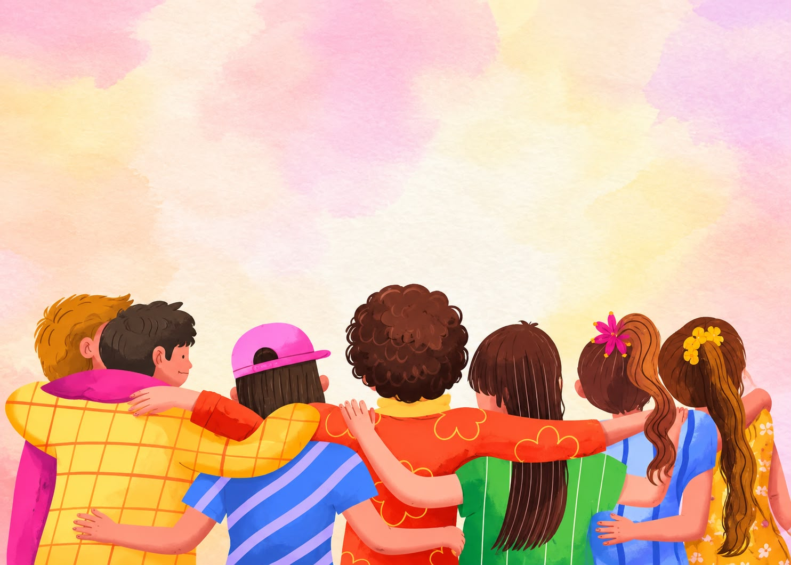
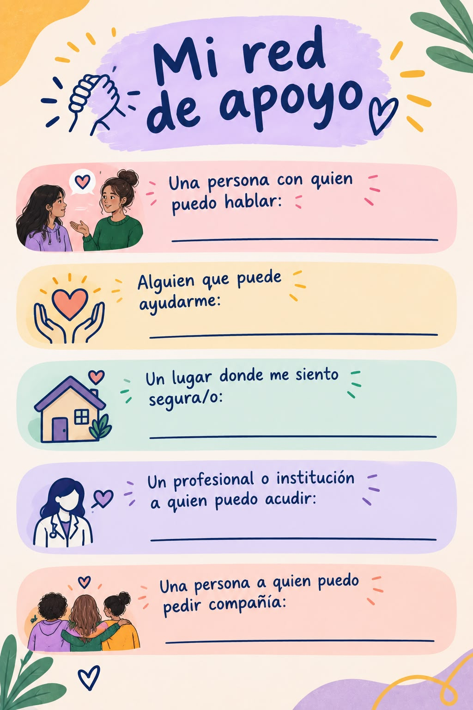
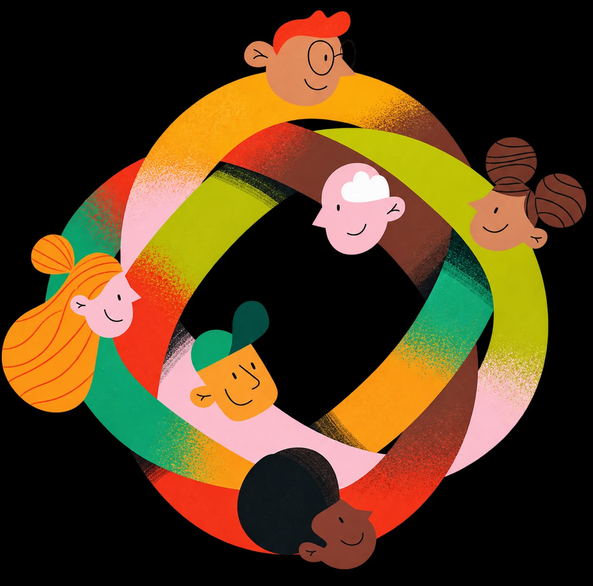

Convivencia y apoyo

Nadie tiene que atravesarlo todo en soledad
La convivencia se construye en lo cotidiano: en cómo hablamos, escuchamos, resolvemos los desacuerdos y respetamos las diferencias.
Vivir con otras personas implica aprender que no siempre vamos a pensar igual. El reto no es evitar todos los conflictos, sino encontrar maneras de afrontarlos sin recurrir a la violencia, la discriminación o el desprecio.
Y así como necesitamos aprender a convivir con otras personas, también necesitamos aprender a pedir y ofrecer apoyo.
Pregúntate:
●¿Cómo reacciono cuando alguien piensa diferente a mí?
●¿Puedo expresar un desacuerdo sin atacar a la otra persona?
●¿Escucho para comprender o solamente para responder?
●¿Respeto las diferencias de otras personas?
●¿Sé pedir ayuda cuando la necesito?
●¿Tengo personas con quienes puedo hablar cuando algo me preocupa?
●¿También estoy disponible para escuchar a quienes quiero?
●¿Qué puedo hacer para que los espacios que habito sean más seguros y respetuosos?
●¿Estoy cuidando mis vínculos o solamente recurro a ellos cuando tengo un problema?
Herramienta: “Mi red de apoyo”

